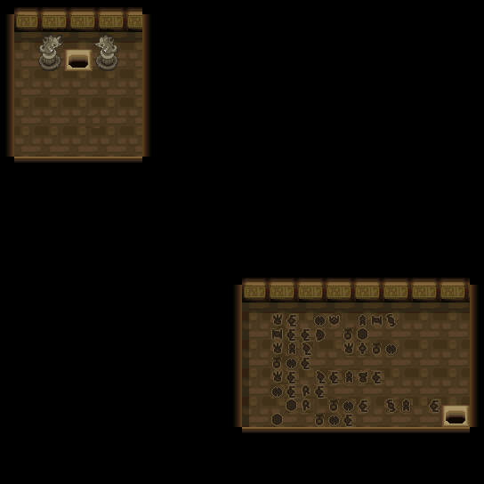
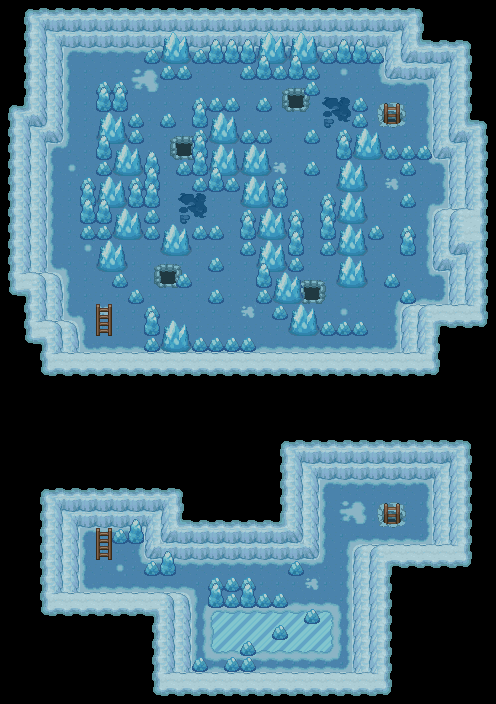
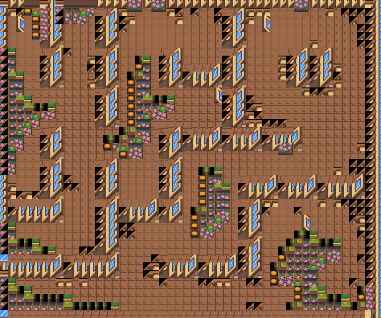

活力碎片
回复1只濒死状态的宝可梦一半HP。
获取：训练师之塔·商店 ／ 紫苑镇·商店 ／ 玉虹市·商店 ／ 浅红市·商店 ／ 红莲岛·商店 ／ 山吹市·商店 ／ 烟墨市·商店 ／ 石英高原·商店 ／ …等 39 处
用途
回复1只濒死状态的宝可梦一半HP。
标价 2000 口袋：道具
获取方式
购买
- 训练师之塔（区域179） · 标价 2000 · 地图｜静态图 · 触发条件待补
- 紫苑镇（区域92） · 标价 2000 · 地图｜静态图 · 触发条件待补
- 玉虹市（区域94） · 标价 2000 · 地图｜静态图 · 触发条件待补
- 浅红市（区域95） · 标价 2000 · 地图｜静态图 · 触发条件待补
- 红莲岛（区域96） · 标价 2000 · 地图｜静态图 · 触发条件待补
- 山吹市（区域98） · 标价 2000 · 地图｜静态图 · 触发条件待补
- 烟墨市（区域152） · 标价 2000 · 地图｜静态图 · 触发条件待补
- 石英高原（区域97） · 标价 2000 · 地图｜静态图 · 触发条件待补
- 吉野市（区域144） · 标价 2000 · 地图｜静态图 · 触发条件待补
- 桔梗市（区域145） · 标价 2000 · 地图｜静态图 · 触发条件待补
- 桧皮镇（区域146） · 标价 2000 · 地图｜静态图 · 触发条件待补
- 缘朱市（区域148） · 标价 2000 · 地图｜静态图 · 触发条件待补
- 浅葱市（区域149） · 标价 2000 · 地图｜静态图 · 触发条件待补
- 烟墨市（区域152） · 标价 2000 · 地图｜静态图 · 触发条件待补
- 石英高原（区域97） · 标价 2000 · 地图｜静态图 · 触发条件待补
- 吉野市（区域144） · 标价 2000 · 地图｜静态图 · 触发条件待补
- 桔梗市（区域145） · 标价 2000 · 地图｜静态图 · 触发条件待补
- 桧皮镇（区域146） · 标价 2000 · 地图｜静态图 · 触发条件待补
- 缘朱市（区域148） · 标价 2000 · 地图｜静态图 · 触发条件待补
- 浅葱市（区域149） · 标价 2000 · 地图｜静态图 · 触发条件待补
- 烟墨市（区域152） · 标价 2000 · 地图｜静态图 · 触发条件待补
- 石英高原（区域97） · 标价 2000 · 地图｜静态图 · 触发条件待补
- 吉野市（区域144） · 标价 2000 · 地图｜静态图 · 触发条件待补
- 桔梗市（区域145） · 标价 2000 · 地图｜静态图 · 触发条件待补
- 桧皮镇（区域146） · 标价 2000 · 地图｜静态图 · 触发条件待补
- 缘朱市（区域148） · 标价 2000 · 地图｜静态图 · 触发条件待补
- 浅葱市（区域149） · 标价 2000 · 地图｜静态图 · 触发条件待补
- 烟墨市（区域152） · 标价 2000 · 地图｜静态图 · 触发条件待补
- 石英高原（区域97） · 标价 2000 · 地图｜静态图 · 触发条件待补
- 吉野市（区域144） · 标价 2000 · 地图｜静态图 · 触发条件待补
- 桔梗市（区域145） · 标价 2000 · 地图｜静态图 · 触发条件待补
- 桧皮镇（区域146） · 标价 2000 · 地图｜静态图 · 触发条件待补
- 缘朱市（区域148） · 标价 2000 · 地图｜静态图 · 触发条件待补
- 浅葱市（区域149） · 标价 2000 · 地图｜静态图 · 触发条件待补
- 烟墨市（区域152） · 标价 2000 · 地图｜静态图 · 触发条件待补
- 石英高原（区域97） · 标价 2000 · 地图｜静态图 · 触发条件待补
- 吉野市（区域144） · 标价 2000 · 地图｜静态图 · 触发条件待补
- 桔梗市（区域145） · 标价 2000 · 地图｜静态图 · 触发条件待补
- 桧皮镇（区域146） · 标价 2000 · 地图｜静态图 · 触发条件待补
- 缘朱市（区域148） · 标价 2000 · 地图｜静态图 · 触发条件待补
- 浅葱市（区域149） · 标价 2000 · 地图｜静态图 · 触发条件待补
- 烟墨市（区域152） · 标价 2000 · 地图｜静态图 · 触发条件待补
- 石英高原（区域97） · 标价 2000 · 地图｜静态图 · 触发条件待补
- 吉野市（区域144） · 标价 2000 · 地图｜静态图 · 触发条件待补
- 桔梗市（区域145） · 标价 2000 · 地图｜静态图 · 触发条件待补
- 桧皮镇（区域146） · 标价 2000 · 地图｜静态图 · 触发条件待补
- 缘朱市（区域148） · 标价 2000 · 地图｜静态图 · 触发条件待补
- 浅葱市（区域149） · 标价 2000 · 地图｜静态图 · 触发条件待补
- 桧皮镇（区域146） · 标价 2000 · 地图｜静态图 · 触发条件待补
- 城都矿山（区域214） · 标价 2000 · 地图｜静态图 · 触发条件待补
- 湛蓝市（区域150） · 标价 2000 · 地图｜静态图 · 触发条件待补
- 满金市（区域147） · 标价 2000 · 地图｜静态图 · 触发条件待补
- 满金市（区域147） · 标价 2000 · 地图｜静态图 · 触发条件待补
- 满金市（区域147） · 标价 2000 · 地图｜静态图 · 触发条件待补
- 满金市（区域147） · 标价 2000 · 地图｜静态图 · 触发条件待补
- 满金市（区域147） · 标价 2000 · 地图｜静态图 · 触发条件待补
- 满金市（区域147） · 标价 2000 · 地图｜静态图 · 触发条件待补
地面隐藏
- 阿露福遗迹（区域134） · (5,18) · 数量 1 · 地图｜静态图
- 野生原野区（区域136） · (13,11) · 数量 1 · 地图｜静态图
- 30号道路（区域155） · (28,50) · 数量 1 · 地图｜静态图
- 连接洞（区域180） · (25,13) · 数量 1 · 地图｜静态图
- 50号水路（区域130） · (26,3) · 数量 1 · 地图｜静态图
- 50号水路（区域130） · (32,9) · 数量 1 · 地图｜静态图
- 光辉灯塔（区域186） · (23,1) · 数量 1 · 地图｜静态图
- 冰天地（区域181） · (15,40) · 数量 1 · 地图｜静态图
- 龙穴（区域217） · (18,12) · 数量 1 · 地图｜静态图
- 擂钵山（区域99） · (70,35) · 数量 1 · 地图｜静态图
- 破海洞穴（区域207） · (8,6) · 数量 1 · 地图｜静态图
- 火箭队基地（区域133） · (46,13) · 数量 1 · 地图｜静态图
人物剧情
- 吉野市（区域144） · (39,16) · 与坐标处人物交互 · 数量 1 · 地图｜静态图 · 触发条件待补
- 呆呆兽之井（区域127） · (24,6) · 与坐标处人物交互 · 数量 1 · 地图｜静态图 · 触发条件待补
- 岩山隧道（区域138） · (2,37) · 与坐标处人物交互 · 数量 1 · 地图｜静态图 · 触发条件待补
- 双子岛（区域139） · (24,14) · 与坐标处人物交互 · 数量 1 · 地图｜静态图 · 触发条件待补
- 32号道路（区域157） · (11,98) · 与坐标处人物交互 · 数量 1 · 地图｜静态图 · 触发条件待补
- 桐树林（区域182） · (17,34) · 与坐标处人物交互 · 数量 1 · 地图｜静态图 · 触发条件待补
- 擂钵山（区域99） · (41,6) · 与坐标处人物交互 · 数量 1 · 地图｜静态图 · 触发条件待补
- 寂静之丘（区域212） · (27,46) · 与坐标处人物交互 · 数量 1 · 地图｜静态图 · 触发条件待补
- 47号道路（区域200） · (57,49) · 与坐标处人物交互 · 数量 1 · 地图｜静态图 · 触发条件待补
- 黑暗洞穴（区域177） · (41,36) · 与坐标处人物交互 · 数量 1 · 地图｜静态图 · 触发条件待补
- 城都矿山（区域214） · (24,36) · 与坐标处人物交互 · 数量 1 · 地图｜静态图 · 触发条件待补
数据来源
- 来源文档：out/items.json（
/24） - 表索引 index 0024；内嵌 itemId 24；口袋 ITEMS (id=1)；type 1；hold_effect 0/0；importance 0；unk19 0
- 获取来源文档：encounters_research/out/shops.json、maps_research/out/events/events.json、maps_research/out/scripts/scripts.json
- 获取记录 ID：
shop:081649A8:5:2:10、shop:0816B381:2:8:5、shop:0816BB26:2:10:1、shop:0816D509:3:11:1、shop:0816EA38:3:12:7、shop:0816EFCB:2:14:5、shop:089C7965:8:31:2、shop:089C7965:8:34:3、shop:089C7965:8:45:1、shop:089C7965:8:46:3、shop:089C7965:8:47:4、shop:089C7965:8:48:7、shop:089C7965:8:49:11、shop:089C7970:7:31:2、shop:089C7970:7:34:3、shop:089C7970:7:45:1、shop:089C7970:7:46:3、shop:089C7970:7:47:4、shop:089C7970:7:48:7、shop:089C7970:7:49:11、shop:089C797B:6:31:2、shop:089C797B:6:34:3、shop:089C797B:6:45:1、shop:089C797B:6:46:3、shop:089C797B:6:47:4、shop:089C797B:6:48:7、shop:089C797B:6:49:11、shop:089C7986:6:31:2、shop:089C7986:6:34:3、shop:089C7986:6:45:1、shop:089C7986:6:46:3、shop:089C7986:6:47:4、shop:089C7986:6:48:7、shop:089C7986:6:49:11、shop:089C7991:4:31:2、shop:089C7991:4:34:3、shop:089C7991:4:45:1、shop:089C7991:4:46:3、shop:089C7991:4:47:4、shop:089C7991:4:48:7、shop:089C7991:4:49:11、shop:089C799C:4:31:2、shop:089C799C:4:34:3、shop:089C799C:4:45:1、shop:089C799C:4:46:3、shop:089C799C:4:47:4、shop:089C799C:4:48:7、shop:089C799C:4:49:11、shop:08171CC4:3:35:7、shop:08171E7C:3:37:4、shop:089DA538:4:49:4、shop:089EB937:8:50:16、shop:089EB942:7:50:16、shop:089EB94D:6:50:16、shop:089EB958:6:50:16、shop:089EB963:4:50:16、shop:089EB96E:4:50:16、hidden:1:57:4、hidden:1:66:4、hidden:3:82:4、hidden:3:94:1、hidden:3:103:1、hidden:3:105:6、hidden:49:16:4、hidden:53:5:0、hidden:54:2:0、hidden:55:8:1、hidden:56:35:0、hidden:56:44:1、script_item_candidate:std:081BEAB9:3:13、script_item_candidate:std:081BEAE0:1:3、script_item_candidate:std:081BEB3B:1:82、script_item_candidate:std:081BEC0B:1:84、script_item_candidate:std:089D20B3:3:84、script_item_candidate:std:089D4CDA:1:121、script_item_candidate:std:08AE0EEF:55:8、script_item_candidate:std:08EC5192:1:97、script_item_candidate:std:08EC7AD7:56:25、script_item_candidate:std:08F4E1DB:1:126、script_item_candidate:std:09CE08D0:51:9 - 说明文字解码来源：
reference/SAVE_HOME_GAME_DATA.json.charmap
地点地图
共享RGB底图；点击可缩放定位。数字对应本页相关地点，不代表地图上全部事件。


展开其余 33 张地点地图
烟墨市

1 活力碎片（1,3）
石英高原
1 活力碎片（1,3）
吉野市

1 活力碎片（1,5）
桔梗市

1 活力碎片（1,5）
桧皮镇

1 活力碎片（1,5）
缘朱市

1 活力碎片（1,5）
浅葱市

1 活力碎片（1,5）
桧皮镇
1 活力碎片（2,3）
城都矿山
1 活力碎片（10,5）
湛蓝市

1 活力碎片（6,3）
满金市

1 活力碎片（22,6）
阿露福遗迹

1 活力碎片（5,18）
野生原野区

1 活力碎片（13,11） 底图有1个图块缺少原始数据。
30号道路


1 活力碎片（28,50）
连接洞

1 活力碎片（25,13）
50号水路

1 活力碎片（26,3）
50号水路

1 活力碎片（32,9）
光辉灯塔

1 活力碎片（23,1）
冰天地

1 活力碎片（15,40）
龙穴

1 活力碎片（18,12）
擂钵山

1 活力碎片（41,6）；2 活力碎片（70,35）
破海洞穴

1 活力碎片（8,6）
火箭队基地

1 活力碎片（46,13） 底图有5个图块缺少原始数据。
吉野市

1 活力碎片（39,16）
呆呆兽之井

1 活力碎片（24,6）
岩山隧道

1 活力碎片（2,37）
双子岛

1 活力碎片（24,14） 底图有19个图块缺少原始数据。
32号道路

1 活力碎片（11,98）
桐树林


1 活力碎片（17,34）
寂静之丘

1 活力碎片（27,46）
47号道路

1 活力碎片（57,49） 底图有3个图块缺少原始数据。
黑暗洞穴

1 活力碎片（41,36）
城都矿山

1 活力碎片（24,36）